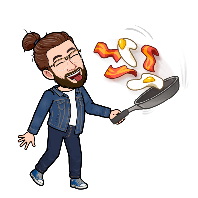

Modi Di Dire
26 articoli in questa categoria.
Essere al verde
Cosa significa "essere al verde"? Quando si è "al verde" significa trovarsi in una situazione finanziaria estremamente precaria, senza avere nemmeno…
28 febbraio 2025Vuotare il sacco
La frase "vuotare il sacco" significa esprimere completamente i pensieri o sentimenti senza trattenersi. La frase "vuotare il sacco" ha un…
4 luglio 2024Mai una gioia
“Mai una gioia” è una frase molto popolare sul web e nella nostra vita quotidiana, specialmente nel 2020. Ma perché si dice così? Cosa significa…
20 giugno 2024
Essere a cavallo
"Essere a cavallo" è un modo di dire italiano che viene utilizzato per indicare che ci si trova in una situazione sicura e confortevole, superando…
6 giugno 2024Il gioco non vale la candela
Cosa significa “il gioco non vale la candela”? Significa che un’attività o una situazione non giustifica lo sforzo richiesto. Questa espressione si…
25 maggio 2024Arrampicarsi sugli specchi
Cosa significa “arrampicarsi sugli specchi”? Significa cercare di trovare una scusa o una giustificazione che non regge.…
11 maggio 2024Chiudere un occhio
Cosa significa "chiudere un occhio"? Significa ignorare qualcosa di negativo per convenienza o favore.…
2 maggio 2024
Cosa bolle in pentola?
Cosa significa “cosa bolle in pentola”? Significa voler sapere cosa sta succedendo o se ci sono novità. Questa espressione trae origine dalla cucina…
27 aprile 2024Tizio, Caio e Sempronio
Cosa significa “Tizio, Caio e Sempronio”? Significa riferirsi a tre persone generiche. Questa espressione si usa in italiano per indicare tre…
6 aprile 2024Essere in alto mare
"Essere in alto mare" è come trovarsi in una barca senza remi, senza bussola e senza sapere dove si stia andando. È una situazione in cui ci si sente…
4 aprile 2024Fare i conti senza l’oste
Cosa significa “fare i conti senza l’oste”? Significa trarre conclusioni affrettate senza considerare tutti i fatti o le persone coinvolte. Questa…
23 marzo 2024Chiodo scaccia chiodo
Cosa significa “chiodo scaccia chiodo”? Significa superare un problema o una delusione sostituendolo con qualcosa di nuovo e positivo. Questo modo di…
21 marzo 2024Saltare nel buio
Se hai sentito parlare di "fare un salto nel buio" ma non sai bene cosa voglia dire, tranquillo! Qui ti spiegheremo tutto. Questo modo di dire si usa…
7 marzo 2024Pagare alla romana
Cosa significa “pagare alla romana”? Significa dividere equamente il conto tra tutti i partecipanti.…
24 febbraio 2024Cadere dalle Nuvole
Vivere sulle nuvole porta libertà, creatività e distacco dalla realtà. "Cadere dalle nuvole" indica sorpresa inaspettata. Vivere sulle nuvole…
1 febbraio 2024Mandare a quel paese
Cosa significa “ mandare a quel paese ”? Significa dire a qualcuno di andare via in modo brusco e spesso offensivo.…
27 gennaio 2024Culo e Camicia
L'espressione "Culo e camicia" denota una stretta connessione basata sulla familiarità e la complicità umana. Perché si usa l'espressione "Culo e…
4 gennaio 2024Cascare dal pero
Cosa significa “cascare dal pero”? Significa prendere atto di qualcosa del quale non si aveva idea, ma che in realtà era abbastanza scontato. Questo…
30 dicembre 2023Pietro torna indietro
Cosa significa “Pietro torna indietro”? Significa che qualcosa che viene prestato deve essere restituito. Questa espressione, che grazie alla rima…
16 dicembre 2023Stare con le mani in mano
Cosa significa “stare con le mani in mano”? Significa non fare nulla, essere inattivi mentre gli altri lavorano. Questo modo di dire si usa per…
7 dicembre 2023Bastian contrario
Cosa significa “fare il Bastian contrario”? Significa opporsi sempre, per principio, a ciò che dicono o fanno gli altri. Questa espressione si usa…
25 novembre 2023Piove sul bagnato
Cosa significa "piove sul bagnato”? Significa che una situazione negativa peggiora o che chi ha già tanto, riceve ancora di più. Questo modo di dire…
2 novembre 2023Acqua in bocca
Cosa significa “acqua in bocca”? Significa mantenere un segreto e non rivelare informazioni riservate. Questo modo di dire si usa quando si vuole…
5 ottobre 2023
Mandare in fumo
Cosa significa “mandare in fumo”? Significa distruggere qualcosa, un progetto o un’idea. Questo modo di dire si usa quando qualcosa viene rovinato o…
23 settembre 2023È il mio cavallo di battaglia
Cosa significa “È il mio cavallo di battaglia”? Significa un punto di forza, una competenza o abilità particolarmente sviluppata e vincente. Questo…
7 settembre 2023In bocca al lupo
La frase “in bocca al lupo” è un augurio comune in italiano che si usa per augurare buona fortuna, specialmente in situazioni di difficoltà o…
8 aprile 2021